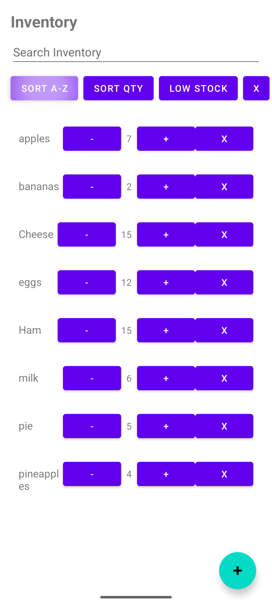
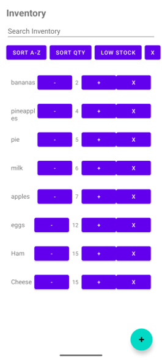
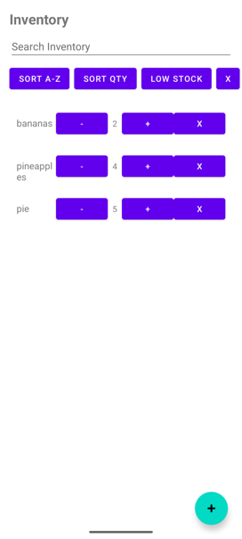
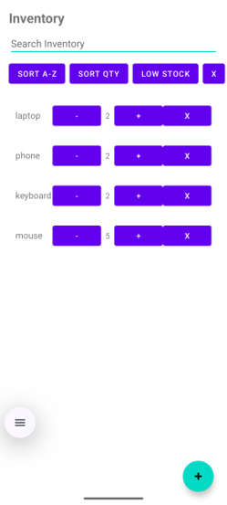
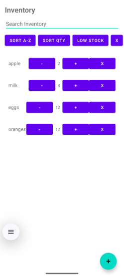
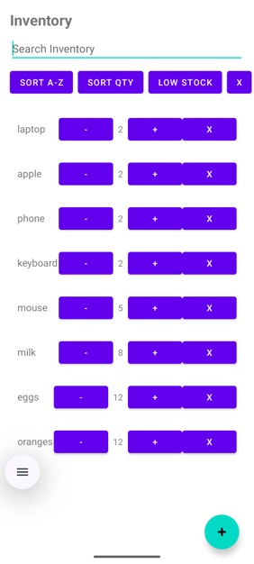

CS 499 Computer Science Capstone ePortfolio
I am a Computer Science student with experience in software development, databases, and system design. This ePortfolio showcases my capstone project: an Android Inventory Management Application built in Kotlin.
Below is my CS 499 code review video:
Watch Code Review Video on YouTubeMy original project is an Android Inventory Management Application that allows users to manage inventory using SQLite for local storage.
Download Original Inventory AppImproved input validation, error handling, and defensive programming in login and add-item features to improve stability and user experience.
Implemented search, sorting, filtering, and reset functionality using a MutableList to manage inventory data.



Improved SQLite database structure by adding user-specific data handling and strengthening CRUD operations.



I developed strong skills in software engineering, mobile development, and database systems. This capstone demonstrates my growth as a developer and readiness for professional work in software engineering.
Download Professional Self-Assessment